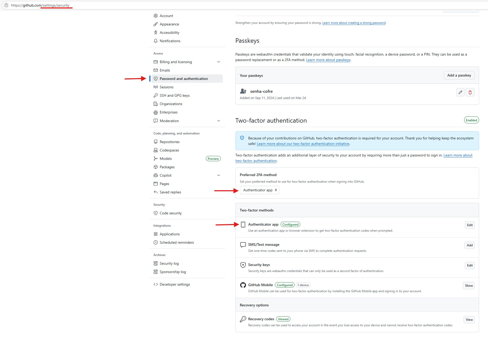

Duplo Fator de Autenticação 🔐⚓︎
Importância da Segurança⚓︎
O Duplo Fator de Autenticação (2FA) é altamente recomendável para todos os membros da organização SPLOR no GitHub. Esta medida de segurança é fundamental para proteger não apenas a conta individual, mas toda a organização.
Atenção!
Lembre-se para além dos dados sensíveis dos próprios integrantes da equipe SPLOR, como CPF, e-mails pessoais etc. alguns dos conjuntos de dados geridos pela organização contém informações sensíveis de terceiros, exigindo ainda mais cuidado e responsabilidade no controle de acessos e permissões, especialmente com a segurança da nossa própria senha.
Por que o 2FA é Essencial?⚓︎
Proteção Contra Invasões!
O 2FA é um mecanismo que reduz drasticamente as chances de alguém ter sua conta invadida. Mesmo que uma senha seja comprometida, o invasor ainda precisará do segundo fator de autenticação para acessar a conta. Se alguém tiver a conta invadida, isso pode representar um risco significativo para os dados sensíveis de toda a organização.
Uma conta comprometida pode resultar em:
- Vazamento de dados confidenciais
- Alterações não autorizadas em repositórios
- Comprometimento de sistemas em produção
- Danos à reputação da organização
- Problemas legais e de compliance
🔑 Como Funciona o 2FA
Primeiro Fator: Senha
- A senha que você já usa para fazer login
- Deve ser forte e única
Segundo Fator: Código de Verificação
- Código temporário gerado por um aplicativo (mais seguro)
- Código enviado por email
- Código enviado por SMS (menos seguro)
Métodos de 2FA recomendados:
Aplicativo Autenticador:
- Microsoft Authenticator - Guia de configuração e uso
- Google Authenticator - Como começar a usar
Configuração do 2FA no GitHub⚓︎
Passo a Passo

- Acesse as configurações da sua conta GitHub
- Vá para "Access" → "Password and authentication"
- Role na página até "Two-factor authentication"
- Escolha o método preferido como "Authenticator app"
- Configure o "Authenticator app" na aba "Two-factor methods"
- Salve os códigos de recuperação
- Teste o login com 2FA
Códigos de Recuperação
- Salve os códigos de recuperação em local seguro
- Use apenas em caso de perda do dispositivo 2FA
- Cada código pode ser usado apenas uma vez
- Gere novos códigos se necessário
Política da SPLOR⚓︎
Obrigatoriedade!
- 2FA é obrigatório para todos os membros da organização
- Owners devem ter 2FA configurado
- Membros devem configurar 2FA antes de acessar repositórios críticos
Boas Práticas⚓︎
Configuração⚓︎
- ✅ Use aplicativo autenticador
- ✅ Salve códigos de recuperação
- ✅ Configure backup de dispositivo
- ✅ Teste o login regularmente
Uso Diário⚓︎
- ✅ Mantenha o dispositivo 2FA seguro
- ✅ Não compartilhe códigos
- ✅ Use em dispositivos confiáveis
- ✅ Faça logout em dispositivos públicos
Emergências⚓︎
- ✅ Tenha códigos de recuperação acessíveis
- ✅ Configure backup de autenticador
- ✅ Documente processo de recuperação
- ✅ Mantenha contato com administradores
Troubleshooting⚓︎
Problemas Comuns⚓︎
Aplicativo não gera códigos:
- Verifique se o relógio está sincronizado
- Reconfigure o QR code se necessário
- Use códigos de recuperação se disponível
Perda do dispositivo:
- Use códigos de recuperação
- Entre em contato com administradores
- Configure novo dispositivo
Códigos não funcionam:
- Verifique se está usando o código correto
- Aguarde o próximo código se necessário
- Use códigos de recuperação